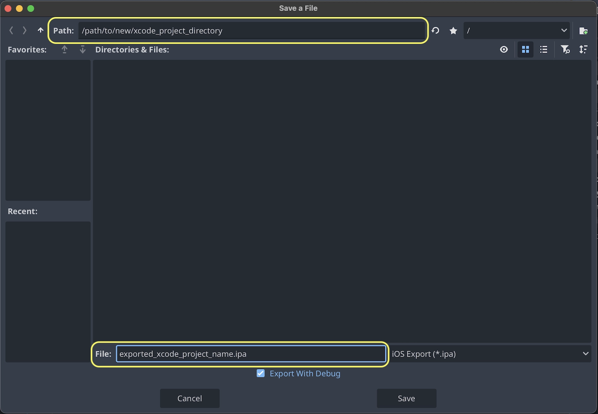
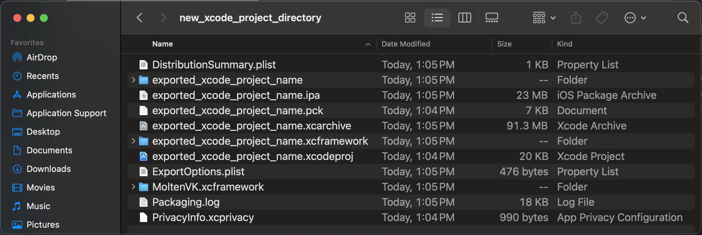
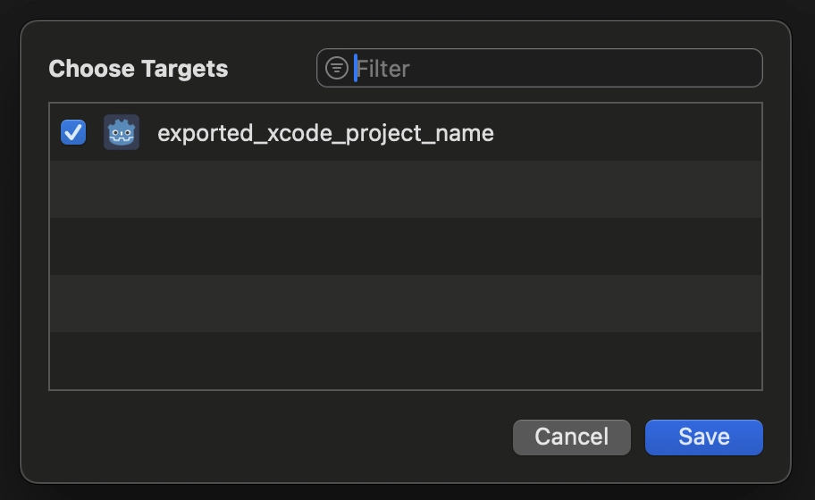
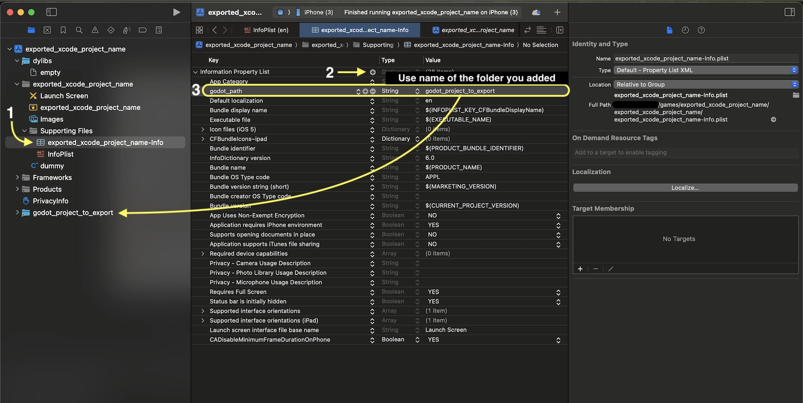

Xuất cho iOS
Xem thêm
Trang này mô tả cách xuất một dự án Godot sang iOS. Nếu bạn muốn biên dịch các binary export template từ mã nguồn, hãy đọc Biên dịch cho iOS.
Đây là các bước để tải một dự án Godot vào Xcode. Việc này cho phép bạn build và triển khai lên thiết bị iOS, build bản phát hành cho App Store, và làm mọi thứ khác bạn thường làm được với Xcode.
Chú ý
Các dự án viết bằng C# có thể được xuất sang iOS kể từ Godot 4.2, nhưng việc hỗ trợ vẫn đang ở mức thử nghiệm và có một số giới hạn.
Yêu cầu
Bạn phải xuất cho iOS từ một máy tính chạy macOS có cài Xcode.
Tải về các export template của Godot. Dùng menu của Godot: Editor > Manage Export Templates
Xuất dự án Godot sang Xcode
Trong trình chỉnh sửa Godot, mở cửa sổ Export từ menu Project. Khi cửa sổ Export mở ra, nhấn Add.. và chọn iOS.
Các tùy chọn App Store Team ID và (Bundle) Identifier trong mục Application là bắt buộc. Nếu để trống, trình xuất sẽ báo lỗi. Bundle ID phải là duy nhất.
Ghi chú
Một bundle ID hợp lệ chỉ được chứa ký tự chữ và số, dấu gạch nối và dấu chấm (A-Z, a-z, 0-9, -, và .). Apple khuyến nghị dùng định dạng reverse-DNS (ví dụ com.example.your-game) của một tên miền bạn sở hữu, để đảm bảo bundle ID là duy nhất. Bundle ID không phân biệt chữ hoa chữ thường. Xem CFBundleIdentifier.
Ghi chú
JSON text did not start with array or object and option to allow fragments not setABCDE12XYZ chứ không phải, chẳng hạn, tên của bạn như cách Xcode hay hiển thị trong tab Signing & Capabilities.Sau khi nhấn Export Project, vẫn còn hai tùy chọn quan trọng:
Path là một thư mục trống sẽ chứa các file dự án Xcode đã xuất.
File sẽ là tên của dự án Xcode cùng một số file và thư mục riêng của dự án.

Ghi chú
Bài hướng dẫn này dùng exported_xcode_project_name, còn bạn sẽ dùng tên dự án của mình. Khi thấy exported_xcode_project_name trong các bước sau, hãy thay bằng tên bạn đã dùng.
Ghi chú
Tránh dùng dấu cách khi đặt exported_xcode_project_name vì điều này có thể làm hỏng file dự án XCode.
Khi quá trình xuất hoàn tất, thư mục đầu ra sẽ trông như sau:

Cảnh báo
Trình giả lập iOS chỉ hỗ trợ renderer Compatibility.
Máy Mac dùng Apple Silicon có thể chạy ứng dụng iOS một cách native, vì vậy bạn có thể chạy trực tiếp các dự án iOS đã xuất trên máy Mac Apple Silicon mà không gặp giới hạn của trình giả lập iOS.
Mở exported_xcode_project_name.xcodeproj cho phép bạn build và triển khai như bất kỳ ứng dụng iOS nào khác.
Lưu ý khi đang phát triển
Cách trên tạo ra một dự án đã xuất mà bạn có thể build bản phát hành, nhưng bạn phải xuất lại mỗi lần thay đổi gì đó trong Godot.
Trong lúc phát triển, bạn có thể tăng tốc quá trình này bằng cách liên kết trực tiếp các file dự án Godot vào ứng dụng.
Trong ví dụ sau:
exported_xcode_project_name là tên của ứng dụng iOS đã xuất (như trên).
godot_project_to_export là tên của dự án Godot.
Ghi chú
godot_project_to_export không được trùng với exported_xcode_project_name để tránh lỗi ký (signing) trong Xcode.
Các bước liên kết thư mục dự án Godot với Xcode
Bắt đầu từ một dự án iOS đã xuất (làm theo các bước ở trên).
Trong Finder, kéo thư mục dự án Godot vào trình duyệt file của Xcode.

Trong hộp thoại, nhớ chọn Action: Reference files in place và Groups: Create folders. Bỏ chọn Targets: exported_xcode_project_name.

Bạn sẽ thấy thư mục godot_project_to_export trong trình duyệt file của Xcode.
Chọn dự án godot trong Project navigator. Sau đó ở phía bên kia cửa sổ XCode, trong File Inspector, chọn như sau:
Location: Relative to Project
Build Rules: Apply Once to Folder
thêm dự án của bạn vào Target Membership


Xóa exported_xcode_project_name.pck khỏi dự án Xcode trong project navigator.

8. Mở exported_xcode_project_name-Info.plist và thêm một thuộc tính kiểu chuỗi tên là godot_path (đây là tên khóa thật) với giá trị godot_project_to_export (đây là tên dự án của bạn)

Vậy là xong! Giờ bạn có thể chỉnh sửa dự án trong trình chỉnh sửa Godot và build nó trong Xcode khi muốn chạy trên thiết bị.
Plugin cho iOS
Có thể dùng các plugin iOS đặc biệt trong Godot. Xem trang Tạo plugin iOS.
Biến môi trường
Bạn có thể dùng các biến môi trường sau để đặt tùy chọn xuất bên ngoài trình chỉnh sửa. Trong quá trình xuất, chúng sẽ ghi đè các giá trị bạn đã đặt trong menu xuất.
Tùy chọn xuất |
Biến môi trường |
|---|---|
Encryption / Encryption Key |
|
Options / Application / Provisioning Profile UUID Debug |
|
Options / Application / Provisioning Profile UUID Release |
|
Khắc phục sự cố
xcode-select trỏ sai vị trí SDK
xcode-select là một công cụ đi kèm Xcode, ngoài các chức năng khác, nó trỏ tới các iOS SDK trên máy Mac của bạn. Nếu bạn đã cài Xcode, mở nó, đồng ý với thỏa thuận giấy phép và cài các command line tools, xcode-select sẽ trỏ đúng vị trí của iPhone SDK. Nếu vì lý do nào đó nó không trỏ đúng, Godot sẽ xuất sang iOS thất bại với lỗi có thể trông như sau:
MSB3073: The command ""clang" <LOTS OF PATHS AND COMMAND LINE ARGUMENTS HERE>
"/Library/Developer/CommandLineTools/Platforms/iPhoneOS.platform/Developer/SDKs/iPhoneOS.sdk"" exited with code 1.
Trong trường hợp này, Godot đang cố tìm thư mục Platforms chứa iPhone SDK bên trong thư mục /Library/Developer/CommandLineTools/, nhưng thư mục Platforms chứa iPhone SDK thực ra nằm dưới /Applications/Xcode.app/Contents/Developer. Để xác minh điều này, bạn có thể mở Terminal và chạy lệnh sau để xem xcode-select đang trỏ tới đâu:
xcode-select -p
Để sửa việc xcode-select trỏ sai vị trí, hãy nhập lệnh này vào Terminal:
sudo xcode-select -switch /Applications/Xcode.app
Sau khi chạy lệnh này, Godot sẽ có thể xuất sang iOS thành công.
Tùy chọn xuất
Bạn có thể tìm danh sách đầy đủ các tùy chọn xuất trong tài liệu tham khảo lớp class_EditorExportPlatformIOS.